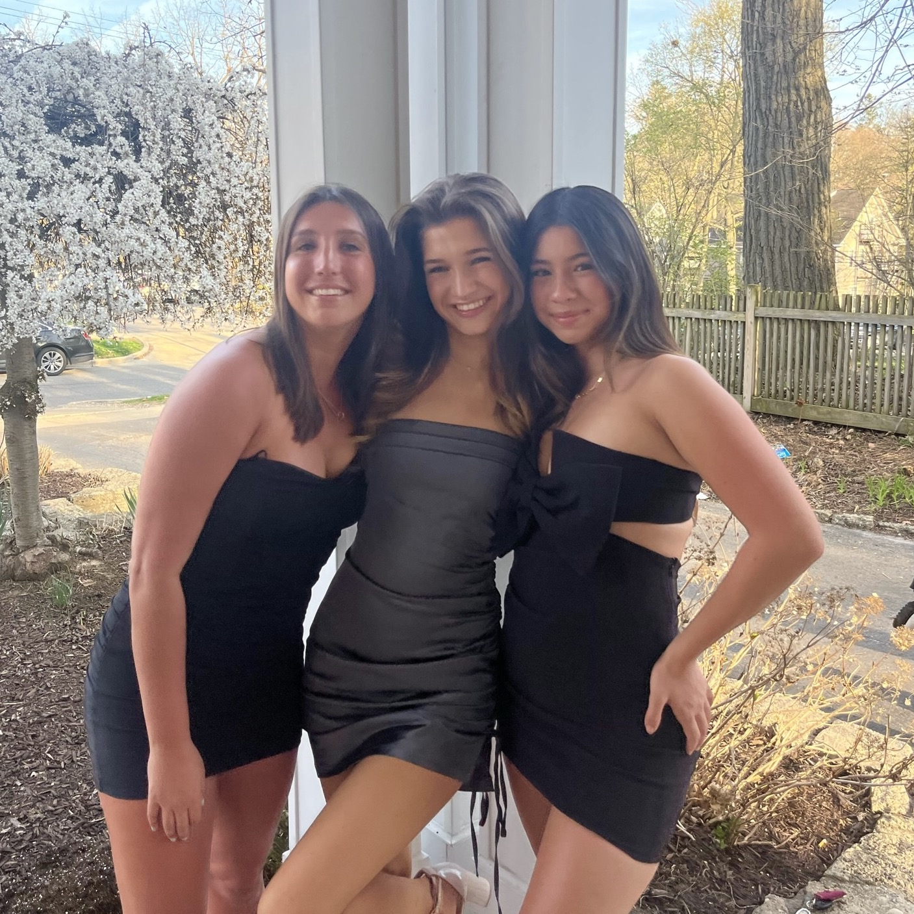

Who We Are
Big Dill was founded by three girls who love pickles! We, Jessie, Annabelle, and Charlotte, created Michigan's first official pickling club because we recognized a need for a community for the many pickle lovers at our school. All having had experience pickling vegetables, we decided to share this hobby with others through a series of pickling pop-ups around Ann Arbor. We have partnered with several local businesses and restaraunts that have helped us bring the joy of pickling to our local community.